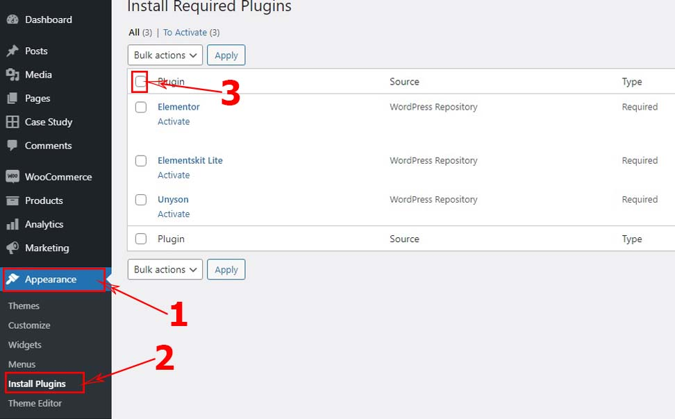
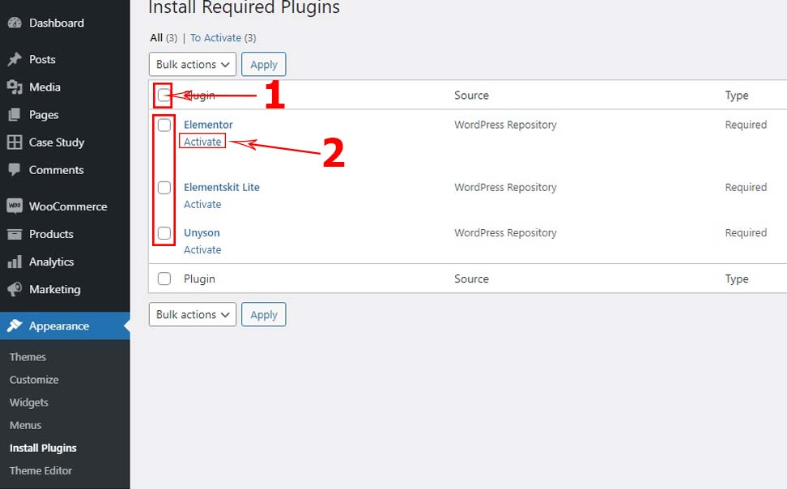
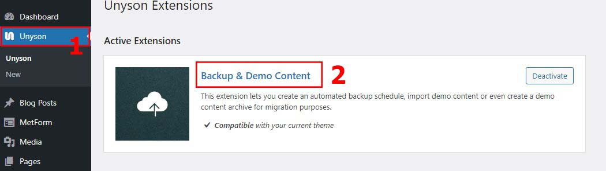
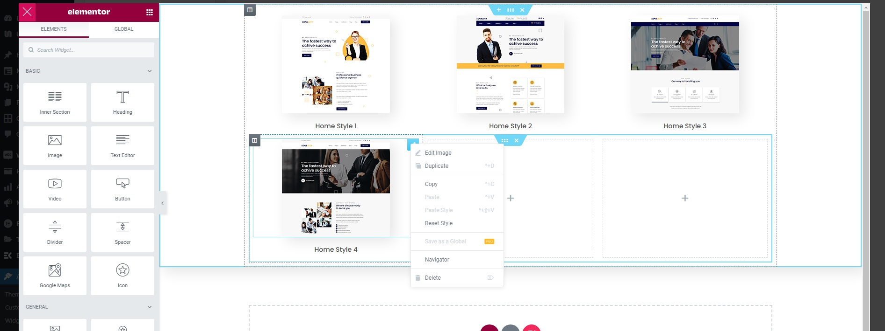
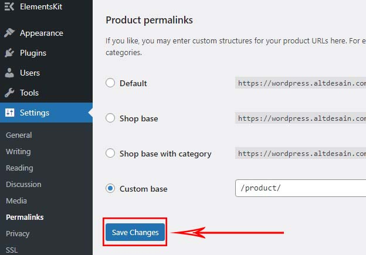

For any support please don't hesitate to message us on the TemplateMonster Support Ticket product. We provide estimate 1 working day real-time support for our customers. Also don't forget to rate this theme, because your rating making us motivated to continue develop this theme for the better future.
Last Theme Update : You can see on the release-log.txt documentation
1| Requirements
You need at least WordPress version 5.0+ installed for this theme to work properly. It is strongly recommended that you use the WordPress Compatibility core version on this product description to ensure all known bugs, compatibility plugin and security issues are fixed with that version of WordPress Core. Other requirements:
PHP version 5.6 or greater. But we recommend you to use PHP version 7.0+ if your hosting are available.
To make instantly demo import from our server with normal function, we recommended your domain is already installing with SSL Certificate enabled.
Here a System Specification we are using to run this theme:
When you are ready to install a theme, you must first upload the theme files and then activate the theme itself. The theme files can be uploaded in two ways:
FTP Upload: Using your FTP client, upload the non-zipped theme folder into the /wp-content/themes/... folder on your wordpress directory.
WordPress Upload: Navigate to Appearance -> Themes -> Add New -> Upload. Go to browse, and select the zipped theme folder. Hit "Install Now" and the theme will be uploaded and installed.
Once the theme is uploaded, you need to activate it. Go to Appearance -> Themes and activate your chosen theme.
After that you need to install and activate the following pre-packaged plugins:
Konstruksy Essential*: Required and must install plugin.
Unyson*: Required and must install plugin.
Elementor*: Required and must install plugin.
Elementskit Lite*: Required and must install plugin.
Slider Revolution*: Required and must install plugin.
Metform*: Required and must install plugin.
WooCommerce: Optional plugin, you can skip if you don't need shop system on your wordpress.
N.B: All plugins must be installed and activated if you want your site to look exactly like demo.
To install these plugins, navigate to Appearance -> Install Plugins and start installation.

After installation process complete you have to activate these plugins.

3| Importing Demo contents
We are providing you two methods for importing demo contents: Automatic and Alternative. You can follow either one of these methods.
Automatic (Recommended): This method will remove all your existing data, so use this method only in fresh website. This procedure will be faster because you just have to do one click and then everything will happen automatically. If you want an exact clone of demo website without doing any manual configuration after importing data then this method is appropiate for you.
Alternative: Use this method only if:
Automatic demo import method fails (Only few of our customers like 5% have experienced this issue due to their hosting limits, in that case we also provide for sending manual demo import data for free). Please send us support ticket if you need to help for this case.
You already have a working website with existing contents; eg. posts, pages or etc (You will be charged extra pay for this).
You don't care about other configurations; eg. various plugin settings, you just want to import posts, pages etc from the demo (You will be charged extra pay for this).
Other customization outside function or demo view (You will be charged extra pay for this).
3.1| Automatic Import
Want to build your site like the demo? You can do it by only one click!
** Note: Before process, please remember that when you are done with the demo import, all existing settings and contents will be removed and replaced by the demo contents. So it is highly recommended that you should only do this in fresh site. **
Please make sure that Konstruksy Parent Theme, Unyson Plugin and Backup & Demo Content Unyson Extension is activated on your wordpress.
From Admin menu, navigate to Tools -> Demo Content Install.
In this page, Click on the Install button for installing the demo.
It will take some time for importing the demo contents, just wait and don't reload the page until complete process.
After importing demo data success, don't forget to update your permalink.
To update permalink, navigate to Settings -> Permalink and then click on Save Changes button.
** If you get error 404 page on all link or menus, it's because you not update permalink after importing demo content, the case is the same in the following section. **
3.2| Alternative Import
** We include this service for free until your wordpress is set normal like a demo theme, for details you check on this section. **
If you have problems with Automatic Import, this is an Alternative Steps for manual importing:
For this step is still same as on automatic import, you need Unyson Plugin and Backup & Demo Content Unyson Extension is activated on your wordpress.
Download manual content source with the .zip format are you request to us via Support Ticket / Email. Upload .zip to your hosting directory .../wp-content/uploads/fw-backup/...
Note: If you not found "fw-backup" folder on your server, please to make "Create Backup" from unyson before.
After put .zip to your hosting, now go to Admin menu, navigate to Unyson -> Backup & Demo Content.

On this page you can see your source content which was uploaded earlier. Now just Select them and click Restore Backup button, just wait and don't reload the page until complete process.
After importing demo data success, don't forget to update your permalink, navigate to Settings -> Permalink and then click on Save Changes button.
4| Theme Settings
You can find default Theme Settings on the admin menu: Appearance -> Customize, if you already in Customize Page, then click Theme Settings.
->
4.1| Header Settings
This settings are located in Theme Settings -> Header Settings.
On this setting you can use this for default header theme. You can setting sticky header, top bar, and more information contact for your website.
As note: This header setting not use on the demo theme, we using Extra Settings for header and footer live builder, so if you need to customize header like a demo, please use this method.
After changing the settings, Click on Publish button on the top to save your setting.
4.2| Style Settings
This settings are located in Theme Settings -> Style Settings.
This setting is required for general custom color & font theme, like a main background color, general link color, default button color, main title font or more.
After changing the settings, Click on Publish button on the top to save your setting.
4.3| Preloader Settings
This settings are located in Theme Settings -> Preloader Settings.
This setting show for preloader style. You can choose for showing yes/no and also you can choose loading animated style.
After changing the settings, Click on Publish button on the top to save your setting.
4.4| Banner Settings
This settings are located in Theme Settings -> Banner Settings.
This setting for you default banner. You can choose more setting if you need to show banner on your main page or blog.
After changing the settings, Click on Publish button on the top to save your setting.
4.5| Blog Settings
This settings are located in Theme Settings -> Blog Settings.
This setting for your blog page. You can setting widget sidebar, related post, showing author and other in this setting area.
After changing the settings, Click on Publish button on the top to save your setting.
4.6| Footer Settings
This settings are located in Theme Settings -> Footer Settings.
On this setting you can use this for default footer theme. You can setting footer background, text color, to top button or copyright information your website.
As note: This footer setting not use on the demo theme, we using Extra Settings for header and footer live builder, so if you need to customize footer like a demo, please use this method.
After changing the settings, Click on Publish button on the top to save your setting.
4.7| WooCommerce
This settings are located in Theme Settings -> WooCommerce.
These are additional settings for the theme if you are using woocommerce on your site. There are several settings, such as: page layout, and banner settings for your shopping page.
As note: This setting is an optional, maybe this setting doesn't show if woocommerce plugin not installing on your site.
After changing the settings, Click on Publish button on the top to save your setting.
4.8| Optional Settings
This settings are located in Theme Settings -> Optional Settings.
This is another default setting for your website. In this feature you can change the default logo for this theme, and also add social media links by default, but this setting was not used in the demo.
As note: This features not use on the demo theme, we using Extra Settings for header and footer live builder, so if you need to customize logo and other social media links on the header or footer like a demo, please use this method.
After changing the settings, Click on Publish button on the top to save your setting.
5| Extra Settings
In this section, you can learn about extra settings apart from the main Theme Setting. Extra Settings are also important for your know and some are used in the demo. Here are some points to know:
5.1| Header & Footer Builder
Customize anything your Header & Footer style with the Header & Footer Live Builder.
This function will be work if Elementor & ElementsKit Lite plugins already installed and activated.
If you already done with installing required plugins, in the Admin menu please go to menu ElementsKit > Header Footer > Choose Header > Edit with Elementor.
We've provided a few samples for the header and footer from the demo importer, so you can use the samples and edit what you need.
Live builder for headers or footers is based on Elementor, if you are familiar with elementor then will be easy for you to use.
When you have finished to changes the information from header or footer, you can save your settings with the UPDATE button, then exit the builder.
Next to make the header or footer stick to the page you want, just back to menu ElementsKit > Header Footer then click Edit see detail on the image below.
You will see a popup for further settings:
To Change Name or Title of the element.
It's an important part of setting on which page you want to put this elements (you need to manually type name of the page on the search box, or you can set this element for all pages).
To save settings.
Don't forget to set the Type, whether this element is used for the header or footer.
For detail to using ElementsKit Lite, you can learn more at this section.
5.2| Page Builder
This function will be work if Elementor plugins already installed and activated. This plugin is important part to run this theme.
For example, to edit existing content taken from a About page, as shown below:
If you want to create a new page using the Elementor Page Builder, please look at the following image:
We using Elementor Full Width Template for create page like a demo on the Page Attributes Section.
For detail to using Elementor, you can learn more at this section.
5.2| Mega Menu
This section explains how you can apply the mega menu, although sometimes we don't apply the mega menu feature on every demo that we make, but this theme fully supports for the mega menu.
For example how to create your mega menu on this theme, navigate to Appearance -> Menus, Then select the menu what you want to create with click the Mega Menu button.
Don't forget to check the box ElementsKit Megamenu function as like a image below.
On the content tab you can click EDIT MEGA MENU CONTENT to enter the builder, also you can view the settings tab to check the size or position about that mega menu.
You will enter the builder to create a mega menu, the builder still uses Elementor and you can customize it to your liking.

After you create the mega menu, you can save all setting from the mega menu builder. That mega menu can automatic application to your menu on header.
*NOTE: Make sure the Menu Name you create is correct, if wrong the mega menu will not appear.
5.3| Shop System
This section is an optional setting, you may skip this section if you are not using the shop system on your wordpress.
This theme is compatible for WooCommerce plugin to support your store systems. If you have installed the WooCommerce plugin, you will see the important parts of this plugin as shown below.
Some of the menus that are marked in red color, are the menu sections of the WooCommerce plugin.
For detail to using WooCommerce, you can learn more at this section.
5.4| Theme Widget
Widget themes can be found on : Appearance -> Widgets. The widgets that are boxed in red color are the available theme widgets.
5.5| Form Builder
This theme using MetForm Plugin to design form like demo theme. You need to install MetForm Plugin if you want to get form like a demo theme.
You can also using other form plugin like a Contact Form 7, Ninja Forms, Gravity Forms or other wordpress form plugins what you like. But you will lose demo form if you not installing main form plugin.
To using MetForm on the admin menu : MetForm -> Form.
Edit (Menu): To setting form like a confirmation email, redirect submit, success message and others.
Edit with Elementor (Menu): To design form with Elementor Builder.
Add MetForm to your page on the Elementor Page Builder, see on the image below.
For detail to using MetForm, you can learn more at this section.
5.6| Main Slider
This theme using Slider Revolution Plugin to design the main slider (This is Premium Plugins for free, you save $59). You need to install that plugin if you want to get slider design like a demo theme.
You can also using other plugin like Layer Slider, Smart Slider, Slide Anything or any slider plugins what you like. But you will lose demo slider if you use other slider plugin.
To using Slider Revolution on the admin menu : Slider Revolution.
For detail to using Slider Revolution, you can learn more at this section.
Some of the points below are usually asked by customers, and the following is a brief description of the solution to the problem:
11.1| Select Home Page
This is a simple guide if you don't know how to change or selecting your default homepage with the available variation homepage provide on the theme, just follow on the image below.
11.2| Fix Error 404 Page
This often happens to some customers when they have finished importing the demo, but some of them forget to rearrange the Permalinks on their wordpress so that all demo urls turn into active urls.
If you are one of those who experience this, simply set the permalinks to be active in your admin menu in Settings -> Permalinks, set like a images below then save the changes.

11.3| Install SSL
Our theme demo contents are made with compatibility (https://) url. In this section, we explain a little about how to add the Instant SSL feature (https://) into your wordpress.
Usually hosting service providers currently provide free SSL to their customers such as Let's Encrypt, CloudFlare, cPanel SSL or others, If you not sure about that, you need to contact your hosting provider and make them help you implement it, because this is also very important for the security of your website.
If you are sure everything is running, here are the points to make the content on your wordpress completely change using the SSL (https://) url, as follows:
Make sure your hosting server and domain supports SSL Certification and you have installed the SSL certification.
You need SSL plugin, here we show for example a plugin Really Simple SSL.
Install and activate the plugin as usual, and follow the instructions for setting up the SSL plugin as needed.
After everything is done, usually you will be asked to re-login admin and start to go back into your wordpress admin.
Done, your url has changed to https://...
For the detail about the Realy Simple SSL plugin you can see at HERE.
11.4| Demo Import Error
This case can happen when there is an error on the network or the limit of your hosting in accessing content downloads to our servers, but usually this rarely happens.
However if you get this trouble, you can contact our support team through the available item support tickets, but beforehand please try to study in more detail on this SECTION or contact your hosting provider, before you try to submit a support tickets regarding this issue, maybe your hosting provider limit you network access.
11.5| Elementor Not Response
Elementor not response just still loading so long.
Regarding this issue, it is possible that the Elementor has made a significant major update, and our theme hasn't been upgraded with the latest Elementor version.
For that, our theme development team needs to update the theme code structure, and essential plugins to stay compatible with the latest WordPress core versions and Elementor plugin.
If this happens you don't have to worry, you can try to downgrade version of the Elementor Plugin from the currently installed version to version which is compatible with the last theme.
How do I downgrade an Elementor version? you can try at THIS ARTICLE.
You can see the CHANGELOG / RELEASE-LOG in the description of theme, what date this theme was upgraded to be compatible with Elementor version or what core version of WordPress.
When this problem occurs, our team will work to improve the compatibility theme to match with the last elementor plugin or wp core, and you just have to wait for an update to become available on this theme.
11.6| Updating Theme
FOR UPDATING THEME : just replace old theme with new update theme, then deactivate theme while and active back them to get automatic notification update and just update plugin required.
12| Thank You & Credits
If you need help or just send us inquiry, don't hesitate to message us from your item support tickets.
Thank You Credits:Bootstrap, Ajax Chimp, Unison Framework, Elementor, Wpmet, Behance, Font Awesome, Google Fonts, Freepik, Unsplash, Flicker, SmoothScroll, Slider Revolution, WordPress.org.
Noted: Images used in the demo may be copyrighted in their own right and are only used as demo previews and as personal use only. Or maybe you have to include a credit image for images that are allowed.
THANK YOU FOR PURCHASING OUR THEME & DON'T FORGET TO GIVE US A RATING STAR :)